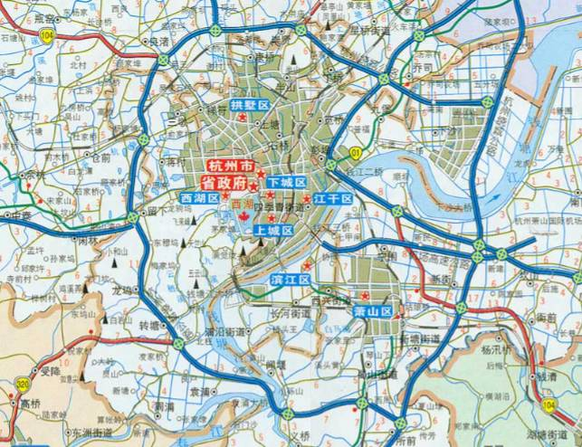
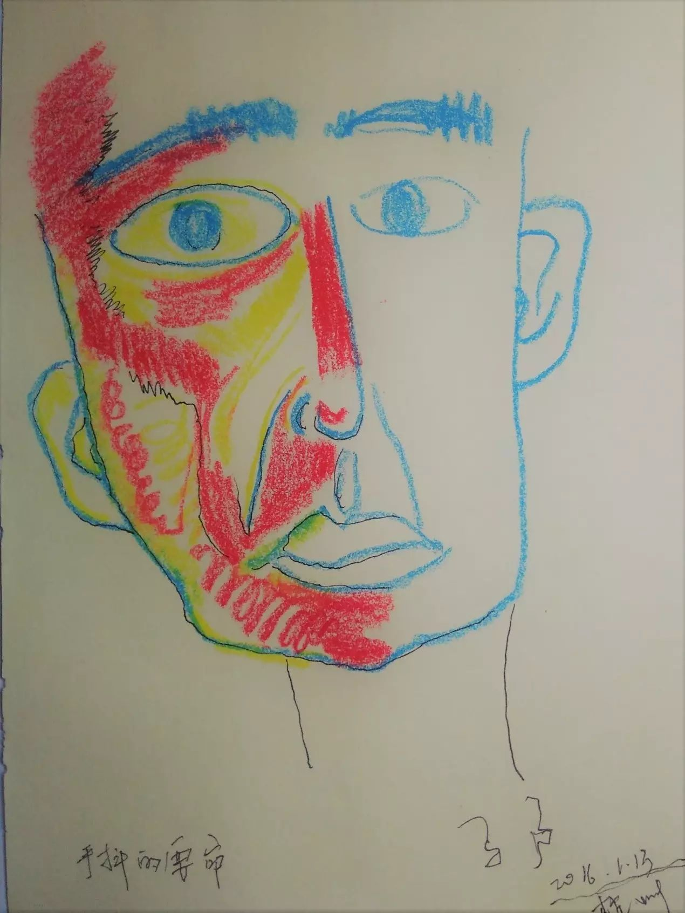
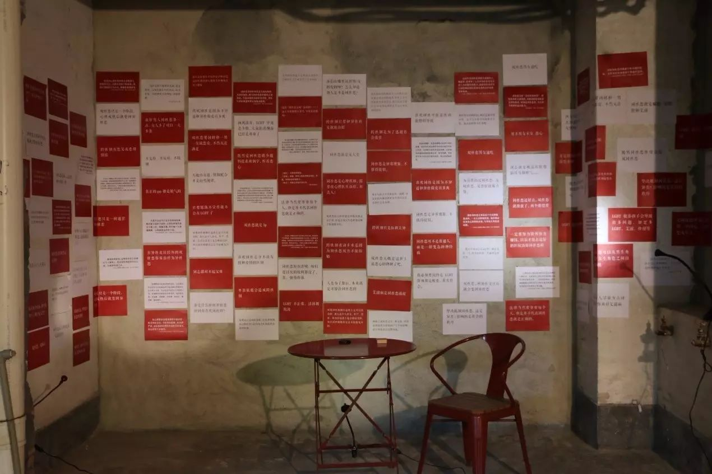
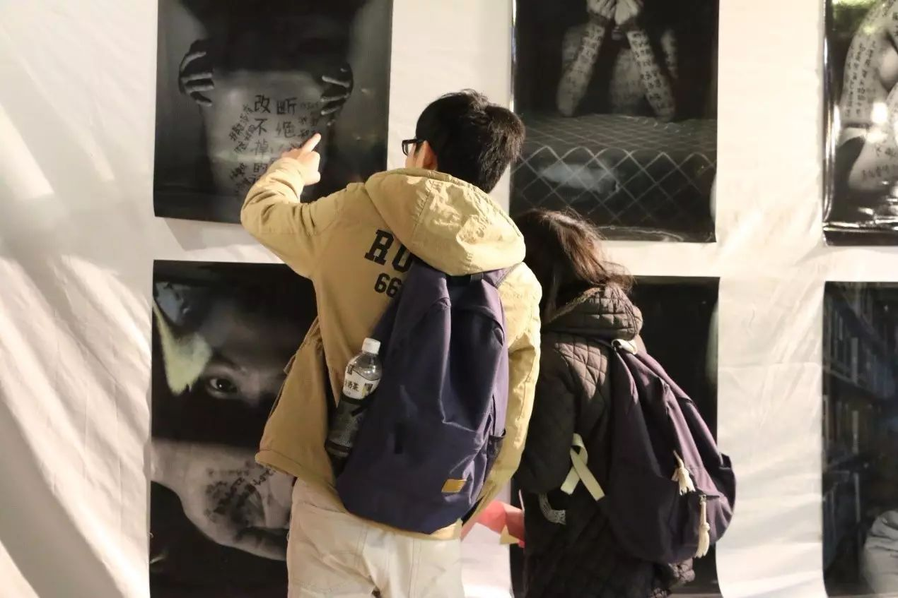
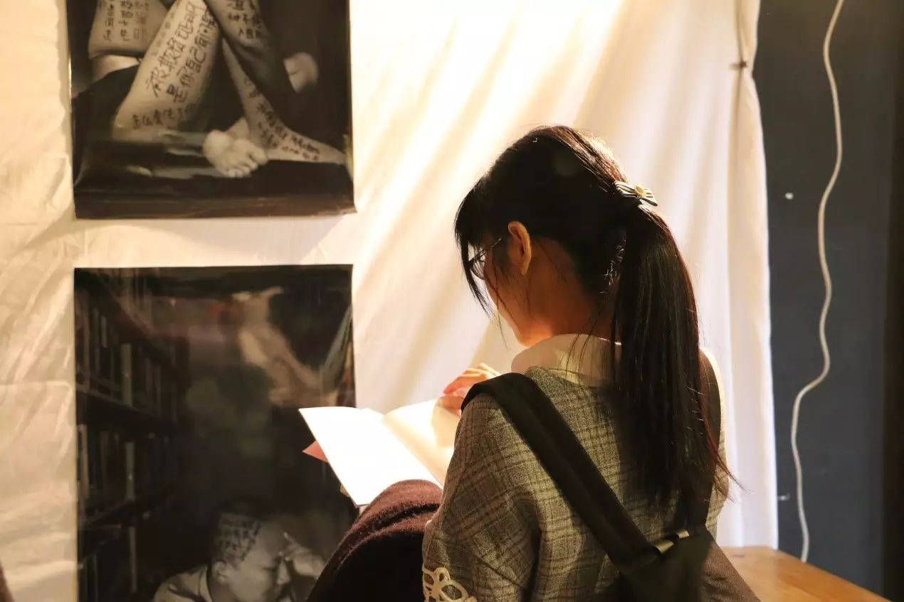

展览︱命名：是谁在书写与定义同志？

日常生活中
同志是被各种专家所创作的
权威话语所包围着
被媒体的报道所掩盖着
你是否曾听过
一位“真实”的同志
在你面前
诉说自己的生命故事
到底是谁在书写与定义同志
我们想用一场展览来探讨这个问题
在影像中反思
在绘画中体会
在对话中理解
别再窥视我
让我讲给你听
这就是我

/ 展览详情 /
命名：是谁在书写与定义同志？
+展期+
2017年5月20——5月21日
+开放时间+
10：00——21：00
+地点+
TheOopen 杭州拱墅区信义街183号
+门票+
欢迎现场随意打赏，打赏所得将会被用于支付场地费用
参展名单：
Dh3、梁莹非、何诗敏、马户、Truman、万青、西西、YY
策展人：
欧嘉泳
联合主办机构：
同城青少年资源中心、酷儿论坛
报名方式：
扫描下方的二维码
或点击文末“阅读原文”报名
有兴趣前来观展的朋友，请务必留下您的联系方式，
方便展览场地出现变更时我们能联系上您

/ 作为同志议题介入媒介的“命名”展 /
此次展览，与其定义为一次作品的展示与被观看，它更是介入同志议题的媒介与工具：我们希望借影像、绘画等艺术方式聚焦同志被定义与消声的处境；借参与式艺术练习自我书写；让平常缺少讨论的话题被带入公共的视野；让被忽视的视野被重新采用。
我们希望可以打破纯粹的观看—被观看的观展方式，因此，我们欢迎你的到场，并期待每位在场者能够以个人的方式，参与到这次集体的书写中。
以下为部分的参展作品，让我们先睹为快。
一、录像：杀死那只同性恋

导演：万青
内容：影片的女学生穿着学士服，在各种场合念着恐同教科书中的话，在安静的图书馆、嘈杂的饭堂、人来人往的街头、凌乱的教室......教科书的话仿佛在每一寸空间中存在。而在她的睡梦中，她与另一名女生拥抱、亲吻......她在两个空间中拉扯，她最终惊醒.......
二、摄影：抹不去的痛——欺凌阴影下的校园“同志”

作者：梁莹非
内容：在倾听那些曾长期遭遇过校园欺凌的同志的故事的过程中，作者莹非一边把故事通通记载在他们的身体上。“这是我所能想到让那些内心深处的往事‘浮出水面’的唯一方法。场面有点滑稽，有点尴尬，但是慢慢的，这仿佛成了一种面对自我的仪式。”
三、记录：你们看我们看自己

作者：“你们看我们看自己”全体创作者
内容：作为同志的自己，拍摄我们个人的生活时，我们不单单只是一个记录者，还是一个书写自身的主体，对自己有更清晰自觉的认识。由此，我们收集了60张照片，希望借此能通过同志的眼，让他人看到同志血肉丰盈的生活姿态。
四、参与式艺术：上街

作者：西西
内容：空间不仅仅只有物理与地理上的概念，还是精神的载体。同志作为居民，也在给杭州这个城市赋予着独特的意义。展览现场我们会放置杭州市地图，并邀请到场的你思考这个城市让你体验到快乐、自由或羞耻等感情的地点，并用大头针在地图上标记、书写，从而展现空间中隐藏着的另类文本。
五、绘画：活着

作者：马户
内容： “生病到现在自己一直在努力和坚持，努力变好那么一点点。这些记录和画也让自己看到自己还活着。”通过这些画，我们希望能看到抑郁症拉拉的处境，同时，我们也希望借此反思“有价值的”、“积极健康的”是如何被定义的。

/ 我们一起看展览 /
现场，策展人Sisyphus将会和大家一起看展览并与大家分享、交流作品背后构想~好奇宝宝们届时可以提问与展览有关的任何问题~！
+导览时间+
5月20日 15：00-15：30

/ “命名”展回顾 /
从16年9月广州到17年5月杭州，从只聚焦于教科书污名同性恋到反思话语权的掌握，“命名”展已经历过多次反思与蜕变。这一次，我们不希望仅仅只是只破不立，而是能够融入对书写自身的探索。
由于种种原因，一路走来，这场草根的展览，无论是创作亦好现场展览也好，我们都是孤独的，至少是缺少社群的陪伴的。因此，希望有幸能在现场看到你，让我们拥有更多与大家交流与互动的机会。
*16年9月广州展


相关介绍可见：http://mp.weixin.qq.com/s/MiIMIiCAJr0uP_cOs5diwA
*17年2月广州展




文/ Sisyphus
编辑/ 文文
封面/ 甘雅
海报设计/ 何诗敏
照片/ 江、甘雅、Vanchy、何诗敏
**5.20、5.21**
期待你来

↑↑↑论坛的支付宝↑↑↑
欢迎打赏个场地费：-D

同城青少年资源中心 GLCAC：
简称“同城”，成立于2006年，是国内最早专注于青少年同志（LGBT）权益和校园性/别友善环境的公益机构。同城青少年资源中心通过推动同志青少年社群发展、支持教师参与性/别教育、开展研究与倡议三方面的战略来倡议中国男女同性恋者、双性恋者、跨性别（LGBT）青少年的平等权益。
欢迎扫码关同城青少年资源中心公众号：
The Oopen:
我们是一家咖啡、酒吧、多元空间，提供咖啡、鸡尾酒、健康沙拉和丰富多采的多元活动。
酷儿论坛：
杭州酷儿论坛（motss.info）致力于为杭州学生性少数人群提供一个平等、多元、健康的环境，促进自我认同和社会认可。